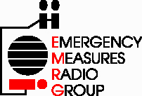
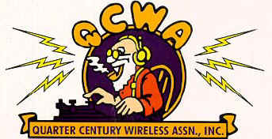
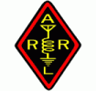
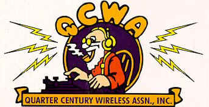
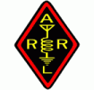

West Carleton Amateur Radio Club
West Carleton Amateur Radio Club
Web Links
Organizations
Radio Amateurs of Canada
Radio Amateur du Québec (RAQI)
 Emergency Measures Radio Group (Ottawa ARES)
 Tucson Amateur Packet Radio
Radio Amateur Satellite Corporation
 QCWA Chapter 70 Ottawa
 Amateur Radio Relay League
Tucson Amateur Packet Radio
Radio Amateur Satellite Corporation
 QCWA Chapter 70 Ottawa
 Amateur Radio Relay League
More Organizations
Contest Club Ontario
Rochester VHF Group
Central States VHF Society
St Lawrence Valley Repeater Council
Upper NY Repeater Council
Western NY and Southern Ontario Repeater Council
Members Web Sites
VE2ZAZ Bert
VE3IRR Clayton
VE3UU Brian
VE3CVG Rick
Members Weather Web Sites
VA3KA Wx via APRS
VE3CVG Wx via APRS
VE3CVG Weather Station Info
Other Local Clubs
Almonte Amateur Radio Club (AARC)
Ottawa Valley Mobile Radio Club (OVMRC)
Ottawa Amateur Radio Club (OARC)
Quinte Amateur Radio Club (QARC)
Kingston Amateur Radio Club (KARC)
Montreal Amateur Radio Club (MARC)
Ottawa Amateur Radio Digital Group (OARDG) D-STAR
Propagation Info
KB7TBT's Space Weather
Hepburn's Tropospheric Ducting Forecast
Realtime MUF (max usable freq) Maps
VHF UHF Realtime QSO Maps
WM7D Solar Page
N3KL Solar/Geomagnetic Interpretations
Space Weather
DX World Propagation Information
Other Useful Info
GMT and the exact time
Meteors and Comets
VE3CVG's Antennas
Lightning Strikes in North America
Earthquake Info
GBP - Many interesting projects
Lots of interesting information
About coax feed line losses
Useful Downloads
WSJT Site
APRS Sites
Find, or Track an APRS Station using APRS.fi
Figure out your grid square using APRS.fi
Find an APRS Station on Findu
Satellite APRS
APRS Info by VE3BSM
APRS Path Change Info by VA3UV
VoIP Stuff
Echolink VoIP Site
Skype VoIP Site
Internet Radio Linking Project
Ottawa BBHN
Ottawa HamNet Map
 Back to WCARC Home Page
Back to WCARC Home Page
This page was updated on October 23, 2016 and is Copyright ©
2004-2016 by West Carleton Amateur Radio Club